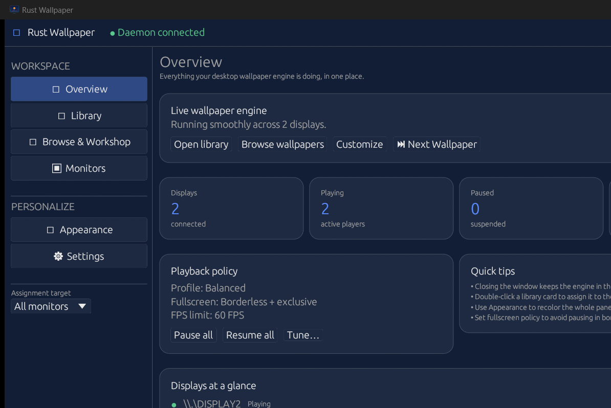
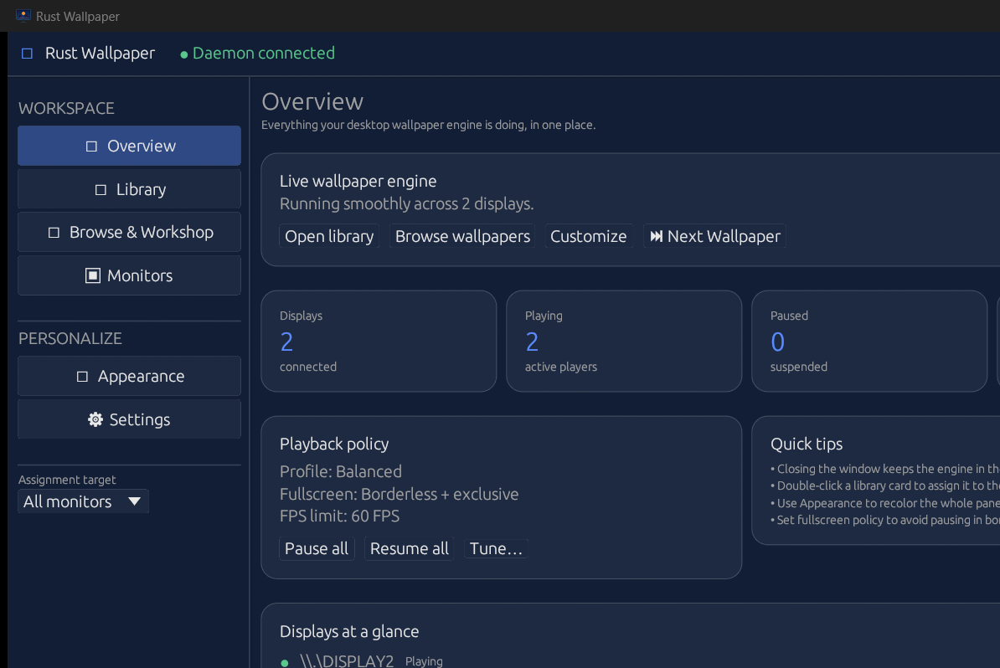
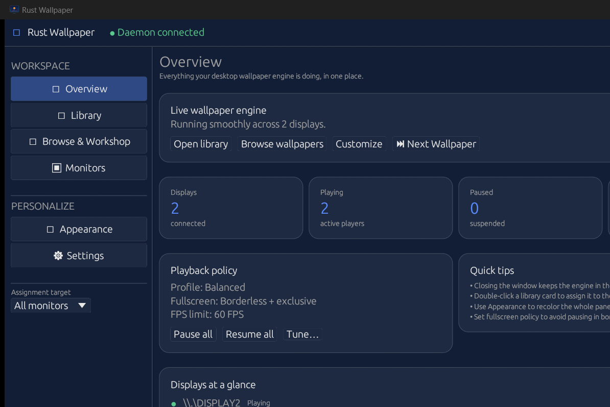

Native Win32 WorkerW Integration
Renders directly behind desktop icons while preserving selection boxes, context menus, and automatic recovery when Explorer restarts.
RustWallpaper re-parents hardware-accelerated MPV video streams behind your
Windows desktop icons via native Win32 WorkerW hooks—delivering smooth 60+ FPS
playback, multi-monitor layouts, Steam Workshop integration, and one-click browser capture.

Built from the ground up in Rust with decoupled background supervision and GPU decoding.
Renders directly behind desktop icons while preserving selection boxes, context menus, and automatic recovery when Explorer restarts.
Offloads decoding to DXVA2 / D3D11VA hardware decoders for near-zero CPU usage across MP4, WebM, MKV, MOV, AVI, and animated GIFs.
Configure FPS caps (15 to Uncapped), demuxer RAM cache (32–256 MB), scaling filters, and automatic pause on fullscreen apps or lock screen.
Assign independent wallpapers and audio levels per monitor, or enable auto-rotating playlists with global hotkeys (Alt+W, Alt+M).
Sniff and apply web videos directly from Chrome, Edge, or Brave over the authenticated local loopback API on 127.0.0.1:24242.
Browse curated online wallpapers or sync compatible Steam Wallpaper Engine video items right inside the desktop library.
Hardware-accelerated egui desktop interface backed by Named Pipe IPC.




wallpaper-daemon manages Win32 WorkerW desktop embedding, monitor lifecycle,
SQLite state (library.db), and the extension Web API bridge, while
wallpaper-ui connects over versioned Win32 Named Pipes (\\.\pipe\rust-wallpaper-ipc).